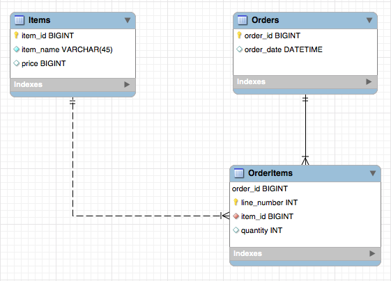
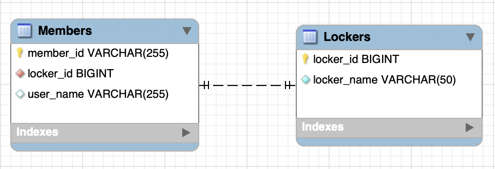

column, row, primary key, foreign key, relationship, transaction, SQL, MySQL, Oracle
IntelliJ에서 VCS에서 가져와 프로젝트 생성
URL: https://github.com/dongmyo/academy-spring-jpa
복제(Clone)
실행 구성: Tomcat 서버, 로컬, 데모
전체 소스 코드 살펴보기:
pom.xml: 메이븐 프로젝트H2 데이터베이스 다운로드 및 실행:
java -jar h2/bin/h2-2.1.214.jar연습:
User 클래스에 age 필드 추가하기데이터베이스 벤더들 마다 다른 쿼리를 작성해주라는 뜻
JPA (Java Persistence API)
JPA (Jakarta Persistence API)
JPA 구현:
JPA는 스펙이다. [1]
ORM을 자바에서 쓰려면 JPA를 써야함.
서블릿과 톰켓의 차이?
서블릿은 스펙이고 톰캣은 구현
JPA는 스펙이다.
SQL 중심적인 개발 -> 객체 중심으로 개발
패러다임 불일치 해결
생산성
유지보수성
데이터 접근 추상화와 벤더 독립성
Spring Framework과 JPA
Demo
앞선 Demo 프로그램에서는 트랜잭션 적용, Spring + JPA 셋팅을 살펴보았다.
Spring Framework의 트랜잭션 추상화
public interface PlatformTransactionManager extends TransactionManager {
TransactionStatus getTransaction(TransactionDefinition definition) /*..*/;
void commit(TransactionStatus status) throws TransactionException;
void rollback(TransactionStatus status) throws TransactionException;
}
Demo: Spring + JPA 셋팅을 살펴본다.
<dependencyManagement>
<dependencies>
<dependency>
<groupId>org.springframework.data</groupId>
<artifactId>spring-data-bom</artifactId>
<version>2021.2.0</version>
<scope>import</scope>
<type>pom</type>
</dependency>
</dependencies>
</dependencyManagement>
<dependency>
<groupId>org.springframework.data</groupId>
<artifactId>spring-data-jpa</artifactId>
</dependency>
@Bean
public LocalContainerEntityManagerFactoryBean entityManagerFactory(DataSource dataSource) {
LocalContainerEntityManagerFactoryBean emf = new LocalContainerEntityManagerFactoryBean();
emf.setDataSource(dataSource);
emf.setPackagesToScan("com.nhnacademy.springjpa.entity");
emf.setJpaVendorAdapter(jpaVendorAdapters());
emf.setJpaProperties(jpaProperties());
return emf;
}
private JpaVendorAdapter jpaVendorAdapters() {
HibernateJpaVendorAdapter hibernateJpaVendorAdapter = new HibernateJpaVendorAdapter();
hibernateJpaVendorAdapter.setDatabase(Database.H2);
return hibernateJpaVendorAdapter;
}
private Properties jpaProperties() {
Properties jpaProperties = new Properties();
jpaProperties.setProperty("hibernate.show_sql", "true");
jpaProperties.setProperty("hibernate.format_sql", "true");
jpaProperties.setProperty("hibernate.use_sql_comments", "true");
jpaProperties.setProperty("hibernate.globally_quoted_identifiers", "true");
jpaProperties.setProperty("hibernate.temp.use_jdbc_metadata_defaults", "false");
return jpaProperties;
}
해당 내용을 마크다운 문법으로 수정하겠습니다.
위 코드는 Spring Data JPA 설정 예시입니다. 위 코드에서는 dependencyManagement 태그 내에서 spring-data-bom을 추가하여 Spring Data JPA에 필요한 라이브러리들의 버전을 일괄적으로 관리할 수 있습니다. dependency 태그 내에서 spring-data-jpa 라이브러리를 추가하여 Spring Data JPA를 사용할 수 있습니다.
LocalContainerEntityManagerFactoryBean을 사용하여 EntityManagerFactory를 설정합니다. DataSource를 주입받아 emf.setDataSource(dataSource) 메서드를 호출하여 DataSource를 설정합니다. emf.setPackagesToScan("com.nhnacademy.springjpa.entity") 메서드를 호출하여 Entity 클래스들이 위치한 패키지를 설정합니다. jpaVendorAdapters() 메서드를 호출하여 Hibernate JPA 구현체를 설정합니다. jpaProperties() 메서드를 호출하여 Hibernate JPA 설정을 추가로 설정합니다. 위 예제에서는 SQL 출력, SQL 포맷팅, SQL 코멘트, Globally quoted identifiers 설정, JDBC metadata 설정 등을 추가로 설정하였습니다.
Spring Framework은 트랜잭션을 추상화하여 다양한 방식으로 트랜잭션을 다룰 수 있게 해주는데, 그 중에서 DataSourceTransactionManager와 JpaTransactionManager를 살펴보겠습니다.
DataSourceTransactionManager는 JDBC의 Connection을 사용하여 트랜잭션을 다룹니다. 따라서 JDBC 기반의 프로그램에서 사용하기 적합합니다.
반면에 JpaTransactionManager는 JPA의 EntityManager를 사용하여 트랜잭션을 다룹니다. JPA 기반의 프로그램에서 사용하기 적합합니다.
또한 @Transactional 어노테이션을 사용하여 선언적 트랜잭션을 사용할 수 있습니다. 이를 사용하면 메서드 단위로 트랜잭션을 관리할 수 있습니다.
@Bean
public PlatformTransactionManager transactionManager(EntityManagerFactory entityManagerFactory) {
JpaTransactionManager transactionManager = new JpaTransactionManager();
transactionManager.setEntityManagerFactory(entityManagerFactory);
return transactionManager;
}
엔터티의 저장, 수정, 삭제, 조회 등 엔터티와 관련된 모든 일을 처리하는 관리자
public interface EntityManager {
public <T> T find(Class<T> entityClass, Object primaryKey);
public <T> T find(Class<T> entityClass, Object primaryKey, Map<String, Object> properties);
public <T> T find(Class<T> entityClass, Object primaryKey, LockModeType lockMode);
public <T> T find(Class<T> entityClass, Object primaryKey, LockModeType lockMode, Map<String, Object> properties);
public void persist(Object entity);
public <T> T merge(T entity);
public void remove(Object entity);
// ...
}
EntityManager를 생성하는 팩토리
public interface EntityManagerFactory {
public EntityManager createEntityManager();
public EntityManager createEntityManager(Map map);
public EntityManager createEntityManager(SynchronizationType synchronizationType);
public EntityManager createEntityManager(SynchronizationType synchronizationType, Map map);
// ...
}
<logger name="org.hibernate.SQL" level="debug" additivity="false">
<appender-ref ref="console" />
</logger>
<logger name="org.hibernate.type.descriptor.sql.BasicBinder" level="trace" additivity="false">
<appender-ref ref="console" />
</logger>
컬럼들은 클래스의 필드들과 매핑
@Entity
//맴버스란 테이블이 자바의 맴버 클래스와 맵핑
@Table(name = "Members")
public class Member {
@Id
@GeneratedValue(strategy = GenerationType.IDENTITY)
private Long id;
private String name;
@Column(name = "created_dt")
private LocalDateTime createdDate;
}
``````java
@Entity
@Table(name = "Members")
public class Member {
@Id
@GeneratedValue(strategy = GenerationType.IDENTITY)
private Long id;
private String name;//컬럼어노테이션은 생략 가능
@Column(name = "created_dt")//dbtable의 컬럼을 명시, 이름이 달라서
private LocalDateTime createdDate;
}
필드와 컬럼 맵핑
@Column : 객체 필드를 컬럼에 맵핑, 생략 가능
@Temporal : 날짜 타입 맵핑
public enum TemporalType {
DATE,
TIME,
TIMESTAMP
}
cf.) Java 8의 date/time (LocalTime, LocalDate, ZonedDateTime) 타입은 @Temporal을 붙이지 않는다.
명확한 타입이기에 굳이 Temporal을 붙 일 필요가 없다는 거같음
@Transient : 특정 필드를 컬럼에 맵핑하지 않을 경우에 지정
임시 값 같은애들은 따로 빼줌
도메인
실습: Items 테이블에 대한 Entity 맵핑
Items 테이블에 대한 Entity 맵핑을 위해 Entity 클래스를 생성하고 컬럼 맵핑을 해보세요.
git checkout entity
기본 키(Primary Key) 맵핑 전략 자동 생성
직접 할당
예제
public class Item {
@Id
@GeneratedValue(strategy = GenerationType.IDENTITY)
@Column(name = "item_id")
private Long itemId;
// ...
}
public @interface GeneratedValue {
GenerationType strategy() default AUTO;
String generator() default "";
}
public enum GenerationType {
TABLE,
SEQUENCE,
IDENTITY,
AUTO
}
실습
Orders 테이블에 대한 Entity 맵핑
Orders 테이블에 대한 Entity 맵핑을 위해 Entity 클래스를 생성하고 컬럼 맵핑을 해봅시다.
@Entity
@Table(name = "Orders")
public class Order {
@Id
@GeneratedValue(strategy = GenerationType.IDENTITY)
@Column(name = "order_id")
private Long orderId;
@Column(name = "order_date")
private LocalDateTime orderDate;
@Column(name = "status")
private String status;
@ManyToOne
@JoinColumn(name = "user_id")
private User user;
// ...
}
복합 Key (Composite key)
복합 키란 둘 이상의 필드를 조합하여 기본 키(PK)를 생성하는 방식입니다. 복합 키를 사용하려면 @IdClass 어노테이션 또는 @EmbeddedId와 @Embeddable 어노테이션을 사용해야 합니다.
@IdClass
복합 키를 사용할 때는 @IdClass 어노테이션을 이용해 Entity class 레벨에서 지정해줍니다. @Id 어노테이션을 필드에 지정하며, 복합 키를 구성하는 모든 필드에 @Id 어노테이션을 붙여줍니다.
@Entity
@Table(name = "OrderItems")
@IdClass(OrderItem.Pk.class)
public class OrderItem {
@Id
@Column(name = "order_id")
private Long orderId;
@Id
@Column(name = "line_number")
private Integer lineNumber;
// ...
@NoArgsConstructor
@AllArgsConstructor
@EqualsAndHashCode
public static class Pk implements Serializable {
private Long orderId;
private Integer lineNumber;
}
}
@EmbeddedId / @Embeddable
복합 키를 사용할 때는 @EmbeddedId와 @Embeddable 어노테이션을 이용해 복합 키 식별자 클래스를 만들어줍니다. 복합 키 식별자 클래스에는 @Embeddable 어노테이션을 붙여주고, Entity 클래스의 필드에는 @EmbeddedId 어노테이션을 붙여줍니다.
@Entity
@Table(name = "OrderItems")
public class OrderItem {
@EmbeddedId
private Pk pk;
// ...
@Embeddable
@NoArgsConstructor
@AllArgsConstructor
@EqualsAndHashCode
public static class Pk implements Serializable {
private Long orderId;
private Integer lineNumber;
}
}
복합키를 하나의 필드에서 사용할수 있다는 장점이 있다. 구조적으로 접근할수 있는 장점
@NoArgsConstructor
@AllArgsConstructor
@EqualsAndHashCode
@Embeddable
public static class Pk implements Serializable {
@Column(name = "order_id")
private Long orderId;
@Column(name = "line_number")
private Integer lineNumber;
}
인스턴스같은지 확인해야해서 public이어야해고 기본 생성자가 반드시 존재해야한다. 그래야 key값을 jpa가 만들 수 있다.
저장되고 읽어야 하니까 e앤티티 매니저가 유일하게 구별해야해서 시리얼라이저블해야한다
서로 다른 인스턴스가 같은값인지 ( 동등한지 확인하기위해 내가 만든 유저인스턴스와 , 디비에서 가져온거를 확인)확인하기위해 equals랑 hashcode 메소드가 구현되어야한다.
OrderItems 테이블에 대한 Entity 맵핑을 위해 Entity 클래스를 생성하고 컬럼 맵핑을 해봅시다. 복합 Key 맵핑을 위한 두 가지 방법을 모두 실습해봅시다.
데이터 베이스 클래스에서 나오는 인스턴스를 관리해주는게 @Entity
@Entity와 관련된 데이터와 관련된 쿼리를 자동으로 설정해준다.
엔터티매니저
반드시 싱글톤으로 써야할거같지만
트랜잭션 세이프하지 않다.
하나의 트랜잭션당 하나의 엔터티 매니저
여러개의 엔터티매니저가 돌아가기때문에 트랜잭션 매니저에서
jpa 엔터티 매니저를 써야 하는것이기 때문이다.
entity 매니저 팩토리는 어플리케이션 전체에 하나만 있으면 되기때문에 싱글톤으로 되있다
커넥션이 달라지면 공장이 하나 더있어야하고
커넥션이 같으면 공장 하나만 있으면 된다.

detach는 데이터베이스에 저장하지 않는다
remove 만으론 디비반영 x
flush를 하면 디비반영 o
- 영속성 컨텍스트에서 Entity의 생명주기
- 비영속 (new/transient): 영속성 컨텍스트와 전혀 관계가 없는 상태
- 영속 (managed): 영속성 컨텍스트에 저장된 상태
- 준영속 (detached): 영속성 컨텍스트에 저장되었다가 분리된 상태
- 삭제 (removed): 삭제하기 위해 표시한 상태
1. 엔티티 매니저랑 상관없이 new 로 생성된 객체는 비영속상태
2. persist() 메소드를 통하면 엔티티매니저가 관리하는 상태로 변환(db 에 들어간 상태는 아님) -> flush 후 db에 저장
3. 추상화된 리포지토리를 보면 entitymanager를 볼일이 없다??? 스프링 레포지토리에는 save save delete find
엔터티매니저 => 스프링 레포지토리
persist,merge => save => saveAndFlush()
remove => delete
find = > find
게시판 테이블 정보:
Entity 클래스는 다음과 같이 작성할 수 있습니다.
@Entity
@Table(name = "board")
public class Board {
@Id
@GeneratedValue(strategy = GenerationType.IDENTITY)
private Long id;
private String title;
@Lob
private String content;
private String writer;
@Column(name = "created_at")
private LocalDateTime createdAt;
@Column(name = "updated_at")
private LocalDateTime updatedAt;
// getters and setters
}
위의 코드에서 @Lob 어노테이션은 컨텐츠가 긴 경우 TEXT 데이터 타입을 사용하기 위한 것입니다.
1. stereotype이 뭔가요
2. @Bean은 뭔가요
3.
dataSource.setInitialSize(10); // 초기 커넥션풀 갯수
dataSource.setMaxTotal(10); // 최대 커낵션 풀 갯수
dataSource.setMinIdle(10);// 놀고있는 커넥션의 최소 갯수
dataSource.setMaxIdle(10); 놀고잇는 커넥션풀의 최대 갯수
//베스트는 모두 갯수를 일치시키는게 베스트(보통 200으로 셋팅)
dataSource.setMaxWaitMillis(1000); // 커넥션풀이 바쁠때 대기시간
4. 커넥션 풀은 커넥션에 드는 비용이 많아서 사용
5.
dataSource.setTestOnBorrow(true); // 커넥션풀에서 커넥션을 가져올때 살아있는지 확인
dataSource.setTestOnReturn(true); // 못쓰는건지 확인? 하고 반환
dataSource.setTestWhileIdle(true); // 주기적으로 살아있는지 확인
//약간의 성능저하가 있을 수도 있다.
// 그래도 커넥션 비용보다 낫다
6. dataSource.setUrl("jdbc:h2:~/spring-jpa;DATABASE_TO_UPPER=false;"
+ "INIT=RUNSCRIPT FROM 'classpath:/script/schema.sql'");
6. 유닛테스트는 관심있는 부분만 테스트
7. 통합테스트는 외부시스템을 다 통합하고 테스트
| 소주제 | 명사형 | 특징 |
|---|---|---|
| ORM | Object-Relational Mapping | 패러다임 불일치 해결, 객체-데이터베이스 매핑, 코드 간결화 |
| JPA | Java Persistence API | 자바 ORM 표준, 인터페이스 기반, 다양한 구현체, 객체 지향적 데이터 처리 |
| 패러다임 불일치 | Paradigm Mismatch | 객체 지향 프로그래밍과 관계형 데이터베이스 간 차이, ORM을 통한 해결 |
| 구현체 | Implementation | JPA 인터페이스 구현, 예: Hibernate, EclipseLink, OpenJPA |
| 소주제 | 명사형 | 특징 |
|---|---|---|
| Entity | Entity 클래스 | 데이터베이스 테이블 매핑, 테이블-컬럼-키 설정 가능 |
| Entity 맵핑 | Entity Mapping | 클래스와 데이터베이스 사이의 매핑 설정, 관계 설정 |
| EntityManager | EntityManager 클래스 | Entity 저장, 수정, 삭제, 조회 등 처리, Entity 관리자 |
| 영속성 컨텍스트 | Persistence Context | Entity 영구 저장 환경, 1차 캐시 역할, EntityManager를 통해 접근 및 관리 가능 |
CREATE TABLE member (
id BIGINT PRIMARY KEY AUTO_INCREMENT,
name VARCHAR(100) NOT NULL,
age INT NOT NULL
);
import javax.persistence.*;
@Entity
@Table(name = "member")
public class Member {
@Id
@GeneratedValue(strategy = GenerationType.IDENTITY)
private Long id;
@Column(name = "name", nullable = false)
private String name;
@Column(name = "age", nullable = false)
private int age;
// 기본 생성자, Getter, Setter, toString() 메서드 등
}
import javax.persistence.*;
public class MemberService {
private EntityManagerFactory emf;
public MemberService() {
//기본적으로 EntityManagerFactory는 프로젝트에서 한개만 존재한다.
emf = Persistence.createEntityManagerFactory("myPersistenceUnit");
}
public Member save(Member member) {
// EntityManger는 트랜잭션 하나당 하나 씩 존재하며
// 트랜잭션 내부에는 다양한 SQL문이 들어갈수 있다
EntityManager em = emf.createEntityManager();
EntityTransaction tx = em.getTransaction();
try {
tx.begin();
em.persist(member);
tx.commit();
return member;
} catch (Exception e) {
tx.rollback();
throw e;
} finally {
em.close();
}
}
public Member findById(Long id) {
EntityManager em = emf.createEntityManager();
try {
return em.find(Member.class, id);
} finally {
em.close();
}
}
// 다른 CRUD 메서드들
}
git checkout entity-manager)git checkout day1-training)| 소주제 | 명사형 | 특징 |
|---|---|---|
| 연관관계 맵핑 | Association Mapping | Entity 클래스의 속성으로 관계 모델링 |
| 데이터베이스 정규화 | Database Normalization | 중복 데이터 줄임, 데이터 불일치 해소 |
| 관계(relationship) | Relationship | 테이블 간 관계, JOIN 사용, 외래 키(FK) 참조 |
| 객체 참조 | Object Reference | 객체 간 연관 관계, 참조 사용 |
@JoinColumn: 외래 키 맵핑@JoinColumns: 복합 외래 키 맵핑| 소주제 | 명사형 | 특징 |
|---|---|---|
| 연관 관계(association) | Association | Entity 클래스의 속성으로 관계 모델링 |
| 외래 키(FK) 맵핑 | @JoinColumn | 단일 외래 키 맵핑, 테이블 간 관계 표현 |
| 복합 외래 키 맵핑 | @JoinColumns | 복합 외래 키 맵핑, 여러 개의 외래 키를 사용 |
teams_members_erd.png
@Entity
@Table(name="Members")
public class Member {
@Id
@Column(name = "member_id")
private String id;
@Column(name = "user_name")
private String userName;
@ManyToOne(fetch = FetchType.EAGER, cascade = CascadeType.ALL)
@JoinColumn(name = "team_id")
private Team team;
}
@OneToOne@OneToMany@ManyToOne(@ManyToMany)FetchType.EAGER (즉시 로딩)FetchType.LAZY (지연 로딩)@OneToOne, @ManyToOne): FetchType.EAGER@OneToMany, @ManyToMany): FetchType.LAZY| 소주제 | 명사형 | 특징 |
|---|---|---|
| 다중성 | Multiplicity | - Entity 간 관계 표현 - @OneToOne: 1:1 관계- @OneToMany: 1:N 관계- @ManyToOne: N:1 관계- @ManyToMany: M:N 관계 |
| FetchType | FetchType | - EAGER: 즉시 로딩- LAZY: 지연 로딩 |
| Fetch 전략 | Fetch Strategy | - 연관 Entity 로딩 설정 - FetchType 설정에 따른 로딩 전략 사용 |
| 기본 Fetch 전략 | Default Fetch Strategy | - *-ToOne (@OneToOne, @ManyToOne): FetchType.EAGER로 기본 설정- *-ToMany ( @OneToMany, @ManyToMany): FetchType.LAZY로 기본 설정 |
cascade 속성으로 설정
@OneToOne(cascade = CascadeType.PERSIST)@OneToMany(cascade = CascadeType.ALL)@ManyToOne(cascade = { CascadeType.PERSIST, CascadeType.REMOVE })public enum CascadeType {
ALL, /* PERSIST, MERGE, REMOVE, REFRESH, DETACH */
PERSIST, // cf.) EntityManager.persist()
MERGE, // cf.) EntityManager.merge()
REMOVE, // cf.) EntityManager.remove()
REFRESH, // cf.) EntityManager.refresh()
DETACH // cf.) EntityManager.detach()
}
| 소주제 | 명사형 | 특징 |
|---|---|---|
| 영속성 전이 | Cascade | - Entity의 영속성 상태 변화를 연관된 Entity에도 함께 적용 - 연관관계의 다중성 지정 시 cascade 속성으로 설정 |
| cascade 종류 | CascadeType | - ALL: 모든 영속성 상태 변화 전이- PERSIST: 생성 시 영속성 전이- MERGE: 업데이트 시 영속성 전이- REMOVE: 삭제 시 영속성 전이- REFRESH: 새로고침 시 영속성 전이- DETACH: 분리 시 영속성 전이 |
CascadeType.ALL: 모든 영속성 상태 변화를 전이합니다. 즉, PERSIST, MERGE, REMOVE, REFRESH, DETACH 모두 적용됩니다.
CascadeType.PERSIST: EntityManager.persist()와 같이, 연관된 Entity를 생성할 때 영속성 상태 변화를 전이합니다.
CascadeType.MERGE: EntityManager.merge()와 같이, 연관된 Entity를 업데이트할 때 영속성 상태 변화를 전이합니다.
CascadeType.REMOVE: EntityManager.remove()와 같이, 연관된 Entity를 삭제할 때 영속성 상태 변화를 전이합니다.
CascadeType.REFRESH: EntityManager.refresh()와 같이, 연관된 Entity를 새로고침할 때 영속성 상태 변화를 전이합니다.
CascadeType.DETACH: EntityManager.detach()와 같이, 연관된 Entity를 영속성 컨텍스트에서 분리할 때 영속성 상태 변화를 전이합니다.
mappedBy 속성으로 연관 관계의 주인을 지정MembermappedBy 속성으로 연관 관계의 주인을 지정 - Team@Entity
@Table(name="Members")
public class Member {
@Id
@Column(name = "member_id")
private String id;
@Column(name = "user_name")
private String userName;
@ManyToOne(fetch = FetchType.EAGER, cascade = CascadeType.ALL)
@JoinColumn(name = "team_id")
private Team team;
}
@Entity
@Table(name = "Teams")
public class Team {
@Id
@Column(name = "team_id")
private String id;
@Column(name = "team_name")
private String name;
@OneToMany(mappedBy = "team", fetch = FetchType.EAGER)
private List<Member> members;
}
mappedBy 속성을 통해 관계의 주인을 정해야 함| 소주제 | 명사형 | 특징 |
|---|---|---|
| 단방향 연관 관계 | Unidirectional | 한 쪽 Entity만 다른 쪽 Entity 참조, 연관 관계 설정 간단 |
| 양방향 연관 관계 | Bidirectional | 양쪽 Entity 서로 참조, 관계 주인 설정 필요, mappedBy 속성 사용, 복잡, 반대 방향 객체 그래프 탐색 가능 |
item-order-orderitem.png
members_lockers_erd.png
git checkout unidirectional-one-to-one@Entity
@Table(name = "Items")
public class Item {
@Id
@GeneratedValue(strategy = GenerationType.IDENTITY)
private Long id;
private String name;
private int price;
// ...
}
@Entity
@Table(name = "Orders")
public class Order {
@Id
@GeneratedValue(strategy = GenerationType.IDENTITY)
private Long id;
@ManyToOne(fetch = FetchType.LAZY)
@JoinColumn(name = "user_id")
private User user;
@OneToMany(mappedBy = "order", cascade = CascadeType.ALL)
private List<OrderItem> orderItems = new ArrayList<>();
// ...
}
@Entity
@Table(name = "OrderItems")
public class OrderItem {
@Id
@GeneratedValue(strategy = GenerationType.IDENTITY)
private Long id;
@ManyToOne(fetch = FetchType.LAZY)
@JoinColumn(name = "item_id")
private Item item;
@ManyToOne(fetch = FetchType.LAZY)
@JoinColumn(name = "order_id")
private Order order;
private int quantity;
// ...
}
members_lockers_erd2.png
git checkout unidirectional-one-to-one2git checkout bidirectional-one-to-onegit checkout unidirectional-one-to-oneboards_borddetails_erd.pnggit checkout identifying-one-to-one
members_memberdetails_erd.png
git checkout unidirectional-many-to-onegit checkout unidirectional-many-to-one2git checkout unidirectional-one-to-manygit checkout bidirectional-one-to-manygit checkout bidirectional-one-to-many2item-order-orderitem.pnggit checkout associationgit checkout association2
| 요구사항 | 설명 |
|---|---|
| Repository의 정의 | 도메인 객체에 접근하는 컬렉션과 비슷한 인터페이스를 사용해 도메인과 데이터 맵핑 계층 사이를 중재합니다. 마틴 파울러는 "저장, 검색, 검색 동작을 캡슐화하는 메커니즘"으로 정의하였고, 에릭 에반스는 DDD(Domain-Driven Design)에서 Repository 개념을 사용하였습니다. Repository는 JPA의 개념이 아니며, Spring Framework에서 제공해주는 것입니다. |
| Spring Data Repository | Spring Data Repository는 데이터 액세스 계층을 구현하는 데 필요한 반복적인 코드를 줄이기 위한 추상화를 제공합니다. 다양한 영속성 저장소에 대한 데이터 액세스 계층 구현에 필요한 보일러플레이트 코드를 크게 줄여줍니다. |
// EntityManager를 통해 entity를 저장, 수정, 삭제, 조회
// create, update, delete, and look up entities through EntityManager
Item entity1 = new ItemEntity();
entity1.setItemName("peach");
entity1.setPrice(135L);
entityManager.persist(entity1);
Item entity2 = entityManager.find(ItemEntity.class, entity1.getItemId());
entity2.setPrice(235L);
entityManager.merge(entity2);
복잡한 쿼리는 JPQL 또는 Criteria API를 사용하여 실행할 수 있습니다.
// JPQL, Criteria API를 이용해서 복잡한 쿼리 수행
// complex query can be executed by using JPQL, Criteria API
String jpql = "select item from Item item where item.itemName like '%peach%'";
List<ItemEntity> entites = entityManager.createQuery(jpql, ItemEntity.class)
.getResultList();
예시: ItemRepository 인터페이스 JpaRepository 인터페이스를 상속합니다.
public interface ItemRepository extends JpaRepository<Item, Long> {
}
대부분의 CRUD, Paging, Sorting 메서드를 제공합니다.
@NoRepositoryBean
public interface JpaRepository<T, ID extends Serializable>
extends PagingAndSortingRepository<T, ID>, QueryByExampleExecutor<T> {
List<T> findAll();
List<T> findAll(Sort sort);
List<T> findAllById(Iterable<ID> ids);
<S extends T> List<S> save(Iterable<S> entities);
<S extends T> S saveAndFlush(S entity);
void deleteInBatch(Iterable<T> entities);
void deleteAllInBatch();
// ...
}
@NoRepositoryBean
public interface PagingAndSortingRepository<T, ID extends Serializable> extends CrudRepository<T, ID> {
Iterable<T> findAll(Sort sort);
Page<T> findAll(Pageable pageable);
}
@NoRepositoryBean
public interface CrudRepository<T, ID extends Serializable> extends Repository<T, ID> {
<S extends T> S save(S entity);
<S extends T> Iterable<S> saveAll(Iterable<S> entities);
Optional<T> findById(ID id);
boolean existsById(ID id);
long count();
void deleteById(ID id);
void delete(T entity);
void deleteAll(Iterable<? extends T> entities);
// ...
}
JpaRepository가 제공하는 메서드들이 실제 수행하는 쿼리:
// insert / update
<S extends T> S save(S entity);
// select * from Items where item_id = {id}
Optional<T> findById(ID id);
// select count(*) from Items;
long count();
// delete from Items where item_id = {id}
void deleteById(ID id);
// ...
ItemRepository를 참조하여 다음 Spring Data JPA Repository 인터페이스를 생성하십시오.
git checkout repository
@Repository
Spring Data Repository
public interface ItemRepository {
// select * from Items where item_name like '{itemName}'
List<Item> findByItemNameLike(String itemName);
// select item_id from Items
// where item_name = '{itemName}'
// and price = {price} limit 1
boolean existsByItemNameAndPrice(String itemName, Long price);
// select count(*) from Items where item_name like '{itemName}'
int countByItemNameLike(String itemName);
// delete from Items where price between {price1} and {price2}
void deleteByPriceBetween(long price1, long price2);
}
TODO 넘버를 따라 요구사항 구현하기
git checkout method
JPA에서 제공하는 객체 지향 쿼리:
Third-party 라이브러리를 이용하는 방법:
JPQL
SELECT DISTINCT post
FROM Post post
JOIN post.postUsers postUser
JOIN postUser.projectMember projectMember
JOIN projectMember.member member
WHERE member.name = 'dongmyo'
Criteria API
EntityManager em = ...;
CriteriaBuilder cb = em.getCriteriaBuilder();
CriteriaQuery<PostEntity> cq = cb.createQuery(PostEntity.class);
Root<PostEntity> post = cq.from(Post.class);
cq.select(post);
TypedQuery<PostEntity> q = em.createQuery(cq);
List<PostEntity> posts = q.getResultList();
cf.) 위 코드를 JPQL로 표현하면?
SELECT post FROM PostEntity post
데이터베이스를 이용한 애플리케이션 개발1 과제(평가)
https://nhnacademy.dooray.com/project/posts/3529956144655367872
..를 기반으로
게시판 데이터베이스 테이블에 대해
어제 만든 Entity 맵핑에 추가로 ...
SELECT DISTINCT post
FROM Post post
JOIN post.postUsers postUser
JOIN postUser.projectMember projectMember
JOIN projectMember.member member
WHERE member.name = 'dongmyo'
@Query("select i from Item i where i.price > ?1")
List<Item> getItemsHavingPriceAtLeast(long price);
@Query(value = "select * from Items where price > ?1", nativeQuery = true)
List<Item> getItemsHavingPriceAtLeast2(long price);
@Modifying
@Query("update Item i set i.itemName = :itemName where i.itemId = :itemId")
int updateItemName(@Param("itemId") Long itemId, @Param("itemName")String itemName);
git checkout querygit checkout query2git checkout method-associationgit checkout projectiongit checkout projection2@EnableSpringDataWebSupport
@Configuration
@EnableWebMvc
@EnableSpringDataWebSupport
public class WebConfig {
// ...
}
git checkout websupport@RestController
@RequestMapping("/items")
public class ItemController {
@Autowired
private ItemService itemService;
@GetMapping
public List<ItemDto> getItems(Pageable pageable) { // GET /items?page=0&size=30
return itemService.getItems(pageable);
}
}
// ?page=0&size=30PageRequest.of(0, 30);@Service
public class ItemServiceImpl implement ItemService {
public List<ItemDto> getItems(Pageable pageable) {
Page<Item> itemPage = itemRepository.findAll(pageable);
// ...
}
}
public interface Page<T> extends Slice<T> {
int getTotalPages();
long getTotalElements();
// ...
}
public interface Slice<T> extends Streamable<T> {
int getNumber();
int getSize();
int getNumberOfElements();
List<T> getContent();
boolean hasContent();
Sort getSort();
boolean isFirst();
boolean isLast();
boolean hasNext();
boolean hasPrevious();
// ...
}
슬라이스와 Page 차이점
select * from items;
//select * from imems offset 0 limit 30
Page<item> getAllBy(페이지어블 페이지어블)
슬라이스<아이템> readAllBy(페이지어블 페이지어블)
슬라이스는 전체 카운트는 알수없음
page는 전체 카운트를 알수있음
git checkout pageablefailed to lazily initialize a collection of role: com.nhnacademy.springjpa.entity.Member.memberDetails, could not initialize proxy - no Sessionorg.springframework.orm.jpa.support.OpenEntityManagerInViewInterceptororg.springframework.orm.jpa.support.OpenEntityManagerInViewFilterfrom(entity)
.where(/* conditions */)
.list();
QPost post = QPost.post;
QPostUser postUser = QPostUser.postUser;
QProjectMember projectMember = QProjectMember.projectMember;
QMember member = QMember.member;
List<Post> posts = from(post)
.innerJoin(post.postUsers, postUser)
.innerJoin(postUser.projectMember, projectMember)
.innerJoin(projectMember.member, member)
.where(member.name.eq("dongmyo"))
.distinct()
.select(post)
.fetch();
List<Post> posts = from(post).fetch();
git checkout querydslpublic interface QuerydslPredicateExecutor<T> {
Optional<T> findOne(Predicate predicate);
Iterable<T> findAll(Predicate predicate);
long count(Predicate predicate);
boolean exists(Predicate predicate);
// ...
}
public interface ItemRepository extends QuerydslPredicateExecutor<Item>, JpaRepository<Item, Long> {
// ...
}
QItem item = QItem.item;
Predicate itemQuery = item.itemName.contains("l")
.and(item.price.gt(200L))
.and(item.itemId.lt(5L));
Optional<Item> result = itemRepository.findOne(itemQuery);
@Repository
public abstract class QuerydslRepositorySupport {
protected JPQLQuery from(EntityPath<?>... paths) { /* ... */ }
protected DeleteClause<JPADeleteClause> delete(EntityPath<?> path) { /* ... */ }
protected UpdateClause<JPAUpdateClause> update(EntityPath<?> path) { /* ... */ }
// ...
}
public interface JPQLQuery<T> {
JPQLQuery<T> from(EntityPath<?>... sources);
<P> JPQLQuery<T> from(CollectionExpression<?,P> target, Path<P> alias);
<P> JPQLQuery<T> innerJoin(EntityPath<P> target);
<P> JPQLQuery<T> innerJoin(EntityPath<P> target, Path<P> alias);
<P> JPQLQuery<T> join(EntityPath<P> target);
<P> JPQLQuery<T> leftJoin(EntityPath<P> target);
<P> JPQLQuery<T> rightJoin(EntityPath<P> target);
// ...
}
@NoRepositoryBean
public interface ItemRepositoryCustom {
// querydsl로 복잡한 쿼리를 수행할 메서드.
List<Item> complexQuery();
}
public class ItemRepositoryImpl extends QuerydslRepositorySupport implements ItemRepositoryCustom {
public ItemRepositoryImpl() {
super(Item.class);
}
@Override
public List<Item> complexQuery() {
QItem item = QItem.item;
JPQLQuery query = from(item).where(/* ... */);
// ...
}
}
public interface ItemRepository extends ItemRepositoryCustom, JpaRepository<Item, Long> {
}
@Autowired ItemRepository itemRepository;
List<Item> items = itemRepository.complexQuery();
@Autowired ItemRepository itemRepository;
List<Item> items = itemRepository.complexQuery();
git checkout querydsl2
git checkout querydsl3
Java Code
itemRepository.findById(1L);
실제 수행되는 쿼리
select
item0_."item_id" as item_id1_4_0_,
item0_."item_name" as item_nam2_4_0_,
item0_."price" as price3_4_0_
from
"Items" item0_
where
item0_."item_id"=1
Java Code
itemRepository.findAll();
실제 수행되는 쿼리
select
item0_."item_id" as item_id1_4_,
item0_."item_name" as item_nam2_4_,
item0_."price" as price3_4_
from
"Items" item0_
Java Code
itemRepository.findAll()
.stream()
.map(Item::getOrderItems)
.flatMap(Collection::stream)
.collect(Collectors.summarizingInt(OrderItem::getQuantity));
실제 수행되는 쿼리
select
item0_."item_id" as item_id1_4_,
item0_."item_name" as item_nam2_4_,
item0_."price" as price3_4_
from
"Items" item0_
select
orderitems0_."item_id" as item_id4_8_0_,
orderitems0_."line_number" as line_num1_8_0_,
orderitems0_."order_id" as order_id2_8_0_,
orderitems0_."line_number" as line_num1_8_1_,
orderitems0_."order_id" as order_id2_8_1_,
orderitems0_."item_id" as item_id4_8_1_,
orderitems0_."quantity" as quantity3_8_1_,
order1_."order_id" as order_id1_9_2_,
order1_."order_date" as order_da2_9_2_
from
"OrderItems" orderitems0_
inner join
"Orders" order1_
on orderitems0_."order_id"=order1_."order_id"
where
orderitems0_."item_id"=1
select
orderitems0_."item_id" as item_id4_8_0_,
orderitems0_."line_number" as line_num1_8_0_,
orderitems0_."order_id" as order_id2_8_0_,
orderitems0_."line_number" as line_num1_8_1_,
orderitems0_."order_id" as order_id2_8_1_,
orderitems0_."item_id" as item_id4_8_1_,
orderitems0_."quantity" as quantity3_8_1_,
order1_."order_id" as order_id1_9_2_,
order1_."order_date" as order_da2_9_2_
from
"OrderItems" orderitems0_
inner join
"Orders" order1_
on orderitems0_."order_id"=order1_."order_id"
where
orderitems0_."item_id"=2
...
@NamedEntityGraphs({
@NamedEntityGraph(name = "itemWithOrderItems", attributeNodes = {
@NamedAttributeNode("orderItems")
}),
@NamedEntityGraph(name = "itemWithOrderItemsAndOrder", attributeNodes = {
@NamedAttributeNode(value = "orderItems", subgraph = "orderItems")
}, subgraphs = @NamedSubgraph(name = "orderItems", attributeNodes = {
@NamedAttributeNode("order")
}))
})
@Entity
public class Item {
// ...
}
@EntityGraph("itemWithOrderItems")
List<Item> readAllBy();
데이터베이스를 이용한 애플리케이션 개발1 과제(평가) 과제 링크
..를 기반으로 게시판 데이터베이스 테이블에 대해 다음을 구현하세요:
현재
JpaRepository 상속
Repository 기능 강화
Web Support 적용
Dto Projection 을 이용해서 Entity 가 아니라 Dto를 반환
Pageable 을 이용한 pagination 적용
1: JPA는 Java에서 ORM을 사용하기 위한 API 스펙입니다. JPA는 인터페이스와 애노테이션을 정의하며, 여러 구현체가 있습니다. 대표적인 구현체로는 Hibernate, EclipseLink, OpenJPA 등이 있습니다. (돌아가기)